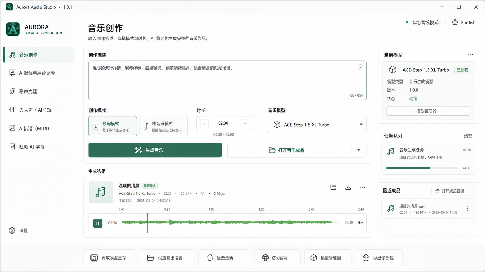

Aurora 1.0.0 正式版 · Windows 10 / 11 x64Aurora 1.0.0 stable · Windows 10 / 11 x64
让声音创作，
回到创作本身。Keep audio creation about creating.
一套默认工作流，更多可选引擎。项目、任务、模型与成品，都在同一个本地工作台里。One dependable default suite, with more engines when you need them. Projects, tasks, models, and output stay in one local workspace.
GPL v3.0 开源。模型按需安装，仅提供标准安装版。GPL v3.0. Models install on demand. Standard installer only.

不是启动器，是你真正工作的地方。More than a launcher. This is where the work happens.
选择创作引擎后，模型工作台直接显示在 Aurora 中。运行状态、保存位置和更新管理始终留在同一套界面里。Choose an engine and its workbench opens inside Aurora. Runtime status, output paths, and updates remain in the same interface.
从文字灵感开始，在嵌入式工作台里生成完整歌曲、纯音乐与旋律草稿。Turn a written idea into full songs, instrumentals, and melodic drafts inside the embedded workbench.
六类创作流程，一套清晰入口。Six creative workflows, one clear entry point.
Aurora 不重新分发模型权重，而是把独立项目整理成可理解、可维护的本地制作流程。Aurora does not redistribute model weights. It organizes independent projects into understandable, maintainable local workflows.
你的电脑，你的目录，你的成品。Your computer, folders, and output.
模型与生成内容不需要经过 Aurora 的云端服务。首次设置时选择位置，之后继续沿用。Models and generated files do not pass through an Aurora cloud service. Choose locations once and keep working there.
不开机自启动。结束当前引擎后，Aurora 会释放由它启动的模型进程。No startup service. Ending an engine stops the model processes launched by Aurora.
更新包通过 SHA-256 校验后，安全替换旧版并保留设置；卸载时可选择是否清理个人配置。Verified updates safely replace the old version while preserving settings; uninstall offers an explicit personal-data choice.
现有默认模型保持不变；Qwen3-TTS 0.6B、F5-TTS、Demucs 与 Basic Pitch 只在你选择后部署。Existing defaults remain unchanged. Qwen3-TTS 0.6B, F5-TTS, Demucs, and Basic Pitch deploy only when selected.
开始之前Before you begin
- Windows 10 1809 或更高版本Windows 10 1809 or later
- Windows 11 x64
- 本地 AI 建议使用 NVIDIA 显卡NVIDIA GPU recommended for local AI
- 模型根据需要单独下载Models download separately on demand
- 仅提供标准安装版Standard installer only
- 模型与第三方工具遵循各自许可Models and tools retain their own licenses
把时间留给作品，不留给环境配置。Spend time on the work, not the setup.
Aurora Audio Studio 1.0.0 正式版提供可断点续传的可靠更新下载、Aurora 专属后台安装进度，以及安装成功后的自动重启。代码已完成不改变功能、界面、交互逻辑和输出的精简审计；设置、模型、项目和成品始终保留。Aurora Audio Studio 1.0.0 delivers resumable update downloads, a dedicated Aurora background-install progress window, and relaunch only after success. Its internals were audited and simplified without changing features, UI, interaction logic, or outputs; settings, models, projects, and outputs remain preserved.
代码签名政策：Aurora 已向 SignPath Foundation 提交开源代码签名申请，目前等待审核。免费代码签名由 SignPath.io 提供，证书由 SignPath Foundation 提供。签名仅用于从公开源码自动构建的 Aurora 正式安装包。查看完整政策与隐私政策。 Code signing policy: Aurora has submitted its SignPath Foundation open-source code-signing application and is awaiting review. Free code signing provided by SignPath.io, certificate by SignPath Foundation. Signing is limited to official Aurora installers built automatically from public source. Read the full policy and privacy policy.